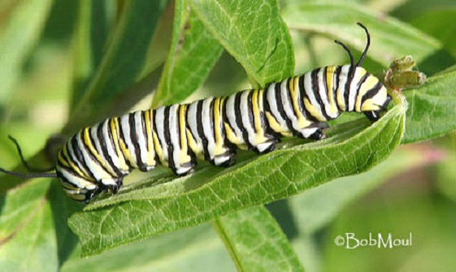

Caterpillars need to eat and eat so they can grow quickly. When a caterpillar is born, they are extremely small. When they start eating, they instantly start growing and expanding. Their exoskeleton (skin) does not stretch or grow, so they grow by “molting? (sheding the outgrown skin) several times while it grows.
Catterpillars

Once ready, the caterpillar leaves its egg home and enters the big outside world! And these little critters have one serious appetite - they actually eat their way out of the egg and immediately start chomping on the leaves of the host plant. During this stage, they shed their skin four or five times - as the caterpillar grows, its skin becomes too tight and splits open, revealing a new, larger skin underneath. A fully grown caterpillar can be over 100 times larger than when it emerged from its egg. Wow!
Go to next Page